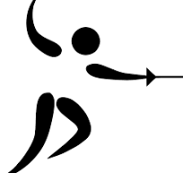
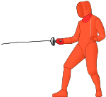
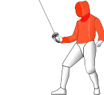

Si l’on considère l’escrime comme l’art de manier les armes de poing, son histoire commence à l’aube de l’humanité. Dès l’Antiquité, les témoignages de combats à l'arme blanche sont nombreux, à l'instar des bas-reliefs égyptiens du temple de Ramsès III à Médinet Habou.
L'épée utilisée pour l'escrime moderne trouve son origine vers la fin du Moyen Âge. Alors que les armures toujours plus perfectionnées défendent presque à la perfection contre les coups des Taille, l'épée devient de plus en plus fine afin de se glisser dans les interstices entre les plaques d'armure et la technique de combat se concentre sur l'estoc pour transpercer les points faibles de l'adversaire. Ce nouveau type d'armes rends inutile le port d'une armure et, avec la Renaissance, l'escrime évolue d'une escrime de champ de bataille vers une escrime de duels au sein de la noblesse qui combattait en habit de cour.
L’histoire de l’escrime peut être partagée en deux étapes : la première est la marque d’un glissement progressif de l’activité guerrière vers une forme d'art martial où le beau geste et l’élégance morale l'emportent ; la deuxième est un nouveau glissement, plus rapide celui-là, entre l'art martial et la pratique sportive contemporaine.
Le fleuret a été créé au xviie siècle pour servir d'arme d'entraînement et d'étude. C'est la seule arme qui ne soit jamais sortie des salles d'escrime (contrairement au sabre qui a servi sur les champs de bataille et l'épée qui a été utilisée pour le duel).
C'est une arme légère — 500 grammes pour une longueur de 110 cm — et flexible dont la section de lame est rectangulaire. La touche se fait avec la pointe uniquement.
Le fleuret est une arme d'étude, il est en général la première arme enseignée aux débutants, bien qu'elle soit aussi pratiquée en compétition. Le choix de la première arme enseignée dépend du club et du maître d'armes. Son nom vient de la fleur de laine, autrefois enroulée au bout de la lame pour éviter les blessures. Dans le passé, les femmes n'étaient autorisées à tirer qu'au fleuret et la légèreté de l'arme en rendait son maniement aisé pour les enfants. De nos jours, bien qu'il soit conseillé d'apprendre au moins les principes fondamentaux du fleuret, les escrimeurs peuvent commencer avec n'importe laquelle des trois armes.
>L'aire de touche au fleuret est restreinte, c'est un héritage du temps où les équipements de sécurité étaient limités. Les coups au visage étant auparavant dangereux faute de masque, la tête n'est pas une cible valide. L'aire fut réduite au tronc seul, zone où les coups portés seraient potentiellement les plus dangereux si les armes n'étaient pas, fort heureusement, neutralisées. Au fleuret, comme au sabre, il est strictement interdit de "substituer" une surface valable (tronc) par une surface non valable (ex. bras ou tête).
Le règlement international de 2009 dispose que la bavette (partie sous le masque) doit être conductrice.
Assaut au fleuret lors des jeux panaméricains. Le fleuret est une arme d'estoc seulement. L'action offensive de cette arme s'exerce donc par la pointe et par la pointe seule. Comme au sabre, on doit respecter des conventions lors d'un assaut. Il n'y a donc pas de « coup double ». En cas de touches simultanées, la touche est accordée au tireur qui avait la priorité. Cette priorité dépend de la phrase d'armes déterminée par la convention du fleuret. Si aucun des tireurs n'avait la priorité, aucune touche n'est accordée.
Dans les petites catégories, la pointe protégée par un composant, en forme de bille en caoutchouc appelée « mouche », permet les assauts courtois sans risque de blessure durant l'entraînement d'escrime.
Dans les grandes catégories, l'arme à « pointe sèche » a été remplacée par une arme électrique dont le bout se termine par une « tête de pointe » (sorte de bouton métallique sur ressort) qui, reliée à l'appareil, permet d'indiquer les touches pendant l'assaut.
Au fleuret, il faut 500 grammes de pression sur le bouton pour qu'une lampe s'allume indiquant que l'adversaire a été touché (soit verte ou rouge dans une partie valable ou blanche dans une partie non valable).
la poignée du fleuret est en forme de pistolet Philippe Omnès, célèbre fleurettiste français des années 1980-1990, définit ainsi son arme favorite : « À mon sens, le fleuret est l'arme de référence de l'escrime. La maîtrise technique que nécessite sa pratique est tout d'abord un handicap, mais à terme se retrouve être un atout pour profiter pleinement de l'escrime. Car c'est à travers la technique du fleuret qu'apparaît le mieux la phrase d'armes, véritable conversation entre les tireurs par l'intermédiaire des lames. Le rythme des assauts de fleuret peut être retenu, comme à l'épée, ou au contraire très vif, comme au sabre ».
L’épée moderne a été inventée au xixe siècle afin de se battre en duel. C’est une arme d’estoc uniquement. On utilisa auparavant, à partir du xvie siècle, la rapière, qui a ensuite évolué en épée de cour sous Louis XIV.
Assaut d'épée aux Championnats d'Europe d'escrime 2007. L'action offensive de cette arme s’exerce donc par la pointe et par la pointe seule. C'est une arme plus lourde — 750 g pour une longueur de 110 cm maximum (poignée d'une longueur de 20 cm maximum) — et moins flexible que le fleuret, et sa lame est de section triangulaire. La surface valable comprend tout le corps du tireur, y compris ses vêtements et son équipement.
Lorsque les deux tireurs sont touchés simultanément, et que l'appareil enregistre valablement ces deux touches (pas plus de 0,25 seconde d’écart entre les deux touches), il y a « coup double », c’est-à-dire un point pour chacun.
L’épée possède deux fils électriques, tous les deux collés à la lame, qui connectent le bouton à l’extrémité de l’épée aux deux des trois prises qui se trouvent à l’intérieur de la coque.  Cette arme est dite « non conventionnelle » car elle n’obéit pas à des règles de priorité comme le fleuret et le sabre : les conditions et les règles du combat sont donc très similaires à celles des anciens duels.
Éric Srecki, épéiste émérite, définit l’épée ainsi :
« L’épée, c'est l’arme où les phases d’attente, de préparation sont les plus longues ; l’observation de l’adversaire peut sembler « s’éterniser » lorsqu’on est néophyte, mais il s’agit en fait de contourner la défense de l'adversaire et de s'engager dans la faille […] C'est donc l’arme de la patience, où les nerfs sont mis à rude épreuve »
— Martine Fauré, Cours d'escrime, éditions de Vecchi (1998) ; préface à l'épée par Éric Srecki.
Le sabre est une arme d'estoc, de taille (coup porté avec le tranchant de la lame) et de contre-taille (coup porté avec le dos de la lame) ; les coups du plat de la lame sont aussi valables. C'est une arme conventionnelle comme le fleuret9 : le sabre répond aux mêmes règles d'engagement (conventions) que le fleuret, donnant la priorité à l'attaquant, et de même légèreté — 500 g pour une longueur totale de 105 cm maximum. En cas de touches simultanées, l'arbitre décide d'accorder la priorité à un des tireurs, ou à aucun des deux. Cette priorité dépend de la « phrase d'armes » et des conventions du sabre. La surface valable pour le sabre est tout ce qui se trouve au-dessus de la taille (à l'exception des 2 mains), car cette arme nous vient de la cavalerie, et qu'il était dans ce cas très difficile de toucher en dessous de la taille. Au sabre, comme au fleuret, il est strictement interdit de « substituer »6 une surface valable par une surface non valable. Contrairement au fleuret et à l'épée, les passes avant (croisement des jambes en un rapide mouvement vers l'avant) sont interdites (elles étaient autorisées mais ont été supprimées du fait que les déplacements des sabreurs se rapprochaient trop de la course). 
Le sabre est une arme dont les assauts sont très difficiles à effectuer par des néophytes, la priorité donnée à l'attaque associée à la relative facilité pour toucher son adversaire rendant les combats très rapides.
Jean-François Lamour, sabreur émérite (il a été deux fois champion olympique, à l'épreuve individuelle, à Los Angeles et Séoul, en même temps que champion du monde individuel) et ancien Ministre des Sports, définit d'ailleurs le sabre de cette manière : « “Assaut” est certainement le mot qui convient le mieux à la discipline du sabre. Plus qu'au fleuret ou à l'épée, c'est dans cette arme que l'escrimeur se trouve dans la nécessité de fondre sur son adversaire en ayant, par feinte et préparation interposées, préparé le geste final. Il n'y a donc pas ou peu de repos pour le sabreur (…) Adaptation et explosion, voilà ce qu'un sabreur doit toujours avoir en tête quand il monte en piste ».
L'équipement des tireurs est composé, dans toutes les armes :
Une équipe d'escrime se compose de quatre tireurs. Trois sont inscrits sur la feuille de match et le quatrième est remplaçant. Ce remplaçant peut entrer en jeu pour des raisons tactiques (méforme d'un équipier titulaire par exemple), ou médicales, pour remplacer un coéquipier blessé. Les remplacements sont irréversibles et chaque équipe ne peut procéder qu'à un seul remplacement par rencontre.
Les matches par équipes (le terme exact définissant les 9 assauts composant un match par équipe est rencontre) se déroulent sous la forme du « relais à l'italienne » : un match en 45 touches durant lequel les 3 tireurs de chaque équipe se remplacent à tour de rôle, soit un total de 9 assauts (chacun des 3 tireurs d'une équipe rencontre chacun de l'autre équipe une fois) de 5 touches. Chaque relais est plafonné à un multiple de 5 touches. Une équipe ne peut totaliser plus de 10 touches après deux relais, 15 après trois relais, etc. Il est toutefois inexact de dire que le nombre maximum de touches par relais est de 5. Dans deux cas de figure, on peut dépasser ce total :
Le score final à l'issue des 9 assauts détermine le vainqueur, la première équipe à 45 touches ou celle qui a le plus de point à la fin du temps réglementaire remporte la rencontre. Le choix de l'ordre des tireurs est donc très important, le dernier pouvant avoir une quantité très importante de touches à rattraper. On place donc communément le meilleur tireur dans le dernier relais, mais la composition d'équipe tient aussi compte des affrontements individuels entre les escrimeurs des deux équipes.
Bien qu'elle soit assez récente dans l'histoire de l'escrime, débutant aux Jeux olympiques de Barcelone en 1992, cette formule de rencontre par équipes a totalement supplanté, dans les compétitions officielles, la formule de 1904 consistant en une rencontre de seize assauts, la victoire revenant à l'équipe qui comptabilise le plus de victoires individuelles, la rencontre s'arrêtant généralement lorsqu'un des deux équipes atteint le palier de neufs victoires, auquel la victoire lui est garantie. Cette formule présentait l'inconvénient d'une logistique particulièrement lourde, avec des équipes pouvant aller jusqu'à huit tireurs. Cette formule fut employée aux Jeux olympiques jusqu'en 1988.
Une autre forme de rencontre par équipes existe, bien qu'elle soit rarement pratiquée en compétition : la poule par équipes. Il s'agit d'une poule totalement analogue à une poule individuelle, à la différence près que les tireurs d'une même équipe ne se rencontrent pas entre eux. L'équipe totalisant le plus grand nombre de victoires est déclarée vainqueur.
Les épreuves par équipes sont sexuées aux Jeux olympiques, et mixtes aux Jeux olympiques de la jeunesse.
Le sabre laser, ou sabre laser sportif, (en anglais "LED saber fencing") est une discipline à caractère sportif apparue dans les années 2010, et reconnue officiellement comme un sport par la Fédération Française d'Escrime le 10 février 2019. La discipline du sabre laser regroupe différentes pratiques ayant recours à l'utilisation d'un sabre laser. Il s'agit de la réplique d'une arme fictive, elle-même issue de la saga cinématographique Star Wars, qui existe dans différentes configurations, avec des caractéristiques techniques variées. La plus répandue se présente sous la forme d'un manche en aluminium d'environ 27 centimètres, surmonté d'une lame creuse en polycarbonate transparent, d'une longueur comprise entre 80 et 90 centimètres et d'un diamètre d'environ 2,5 centimètres. La lame est éclairée par une ou plusieurs diodes électroluminescentes, alimentées par une batterie.
La discipline s'organise autour de trois pratiques principales, reconnues par la Fédération Française d'Escrime : la chorégraphie de combat, les katas et le combat sportif. De nombreuses associations, réparties dans plusieurs pays, proposent des pratiques et systèmes de combat différents.
Les pratiquants sont surnommés laseristes.